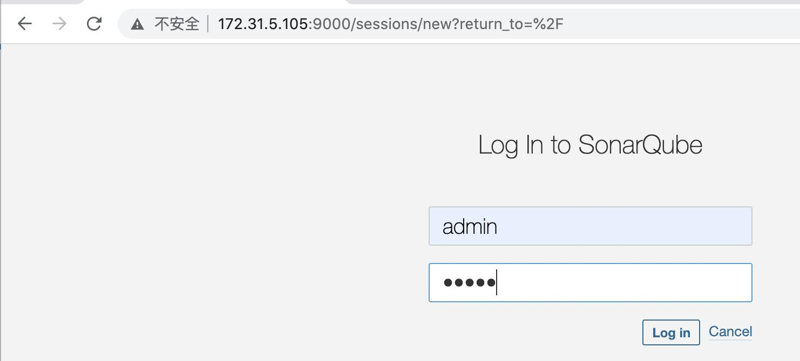
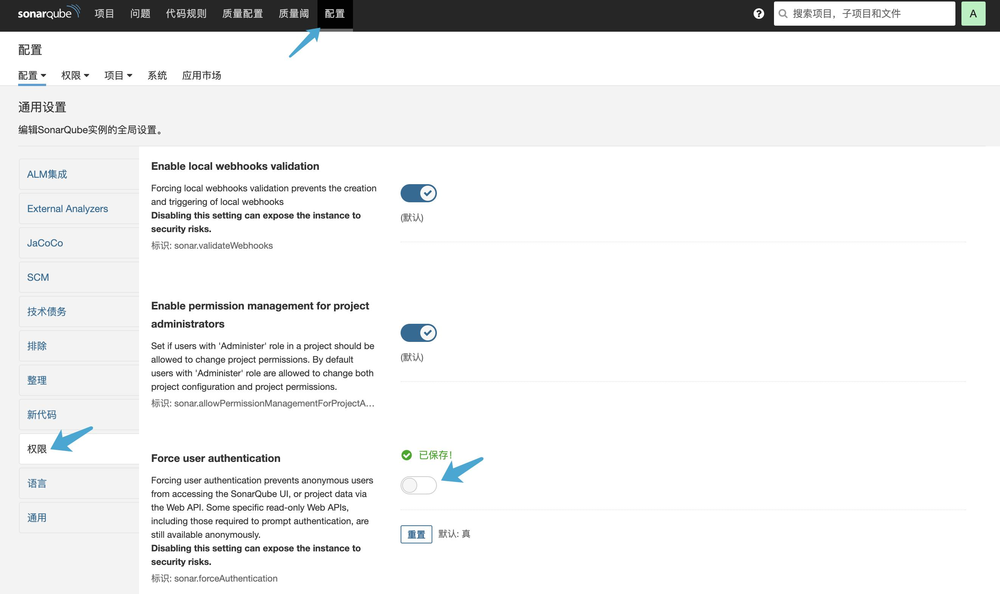
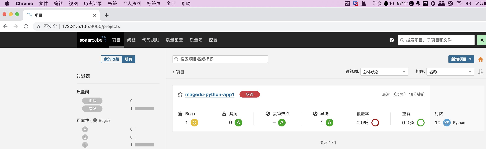

SonarQube 部署
环境简介：

环境依赖：
-
软件依赖：
-
7.9.x 版本开始不再支持 MySQL
- MySQL No Longer Supported
- SonarQube no longer supports MySQL. To migrate from MySQL to a supported database, see the free MySQL Migrator tool.
-
不能使用 root 用户启动 SonarQube
- SonarQube cannot be run as root on Unix-based systems, so create a dedicated user account for SonarQube if necessary.
-
硬件依赖：
部署PostgreSQL 14.x：
- PostgreSQL安装：
# sudo apt update
# apt-cache madison postgresql
# apt install postgresql
- PostgreSQL环境初始化：
# sudo pg_createcluster --start 14 mycluster #指定版本为PostgreSQL 14
# vim /etc/postgresql/14/mycluster/pg_hba.conf
96 # IPv4 local connections:
97 host all all 0.0.0.0/0 scram-sha-256
# vim /etc/postgresql/14/mycluster/postgresql.conf
60 listen_addresses = '*' #defaults to 'localhost'; use '*' for all
- PostgreSQL端口验证：
# lsof -i:5432
COMMAND PID USER FD TYPE DEVICE SIZE/OFF NODE NAME
postgres 4259 postgres 5u IPv4 54944 0t0 TCP *:postgresql (LISTEN)
postgres 4259 postgres 6u IPv6 54945 0t0 TCP *:postgresql (LISTEN)
- 创建数据库及账户授权：
# su - postgres #切换到postgres普通用户
# psql -U postgres #进入到postgresql命令行敞口
psql (14.5 (Ubuntu 14.5-0ubuntu0.22.04.1))
Type "help" for help.
postgres=# CREATE DATABASE sonar; #创建sonar数据库
CREATE DATABASE
postgres=# CREATE USER sonar WITH ENCRYPTED PASSWORD '123456'; #创建sonar用户密码为123456
CREATE ROLE
postgres=# GRANT ALL PRIVILEGES ON DATABASE sonar TO sonar; #授权用户访
GRANT
postgres=# ALTER DATABASE sonar OWNER TO sonar; #执行变更
ALTER DATABASE
postgres=# \q #退出
~$ exit
部署SonarQube Server 8.9.x：
配置需求：
推荐：2C4G
最小：2C2G
- 安装jdk 11:
# apt install -y openjdk-11-jdk
- 内核参数：
# vim /etc/sysctl.conf
vm.max_map_count = 262144
fs.file-max = 65536
- 部署SonarQube 8.9.x：
# mkdir /apps && cd /apps/
# unzip sonarqube-8.9.10.61524.zip
# ln -sv /apps/sonarqube-8.9.10.61524 /apps/sonarqube
# useradd -r -m -s /bin/bash sonarqube && chown sonarqube.sonarqube /apps/ -R && su - sonarqube
~$ vim /apps/sonarqube/conf/sonar.properties
18 sonar.jdbc.username=sonar
19 sonar.jdbc.password=123456
37 sonar.jdbc.url=jdbc:postgresql://172.31.5.106/sonar
~$ /apps/sonarqube/bin/linux-x86-64/sonar.sh --help
~$ /apps/sonarqube/bin/linux-x86-64/sonar.sh start
- 验证SonarQube：
~$ tail /apps/sonarqube/logs/*.log
2022.11.08 10:48:22 INFO app[][o.s.a.SchedulerImpl] Process[ce] is up
2022.11.08 10:48:22 INFO app[][o.s.a.SchedulerImpl] SonarQube is up
~$ lsof -i:9000
COMMAND PID USER FD TYPE DEVICE SIZE/OFF NODE NAME
java 6159 sonarqube 14u IPv6 81413 0t0 TCP *:9000 (LISTEN)
-
访问web界面：
- 默认账户: admin
- 默认密码：admin #首次登录需要修改密码

-
插件管理:
- Administration--> Marketplace--> I understand the risk(首次需要点击我理解风险)-->all
- Administration--> System--> Restart Server #新插件安装成功后需要重启SonarQube server

-
认证管理:
- 配置--> 权限--> Force user authentication

- service 文件：
# cat /etc/systemd/system/sonarqube.service
[Unit]
Description=SonarQube service
After=syslog.target network.target
[Service]
Type=simple
User=sonarqube
Group=sonarqube
PermissionsStartOnly=true
ExecStart=/bin/nohup /usr/bin/java -Xms1024m -Xmx1024m -Djava.net.preferIPv4Stack=true -jar
/apps/sonarqube/lib/sonar-application-8.9.10.61524.jar
StandardOutput=syslog
LimitNOFILE=131072
LimitNPROC=8192
TimeoutStartSec=5
Restart=always
SuccessExitStatus=143
[Install]
WantedBy=multi-user.target
部署扫描器sonar-scanner：
-
sonar-scanner会访问指定的SonarQube Server，以下载执行代码质量扫描的时候所需要的分析器、质量配置文件等资源，以实现代码分析和结果上传。
-
在jenkins或其它需要进行代码指令扫描的服务器部署sonar-scanner：
# unzip sonar-scanner-cli-4.7.0.2747.zip
# ln -sv /apps/sonar-scanner-4.7.0.2747 /apps/sonar-scanner
# vim /apps/sonar-scanner/conf/sonar-scanner.properties
#----- Default SonarQube server
sonar.host.url=http://172.31.5.105:9000
#----- Default source code encoding
sonar.sourceEncoding=UTF-8

- 在sonar-scanne节点测试代码质量扫描：
- 配置参数：
root@jenkins:/opt/python-test# ll
drwxr-xr-x 2 root root 48 Nov 8 20:21 .scannerwork/
-rw-r--r-- 1 root root 284 Nov 8 20:20 sonar-project.properties
drwxr-xr-x 2 root root 21 Nov 8 20:07 src/
# cat sonar-project.properties
# Required metadata
sonar.projectKey=magedu-python //#项目key,项目唯一标识、通常使用项目名称
sonar.projectName=magedu-python-app1 #项目名称，当前的服务名称
sonar.projectVersion=1.0 #当前的代码版本
# Comma-separated paths to directories with sources (required)
sonar.sources=./src #源代码路径、sonar-scanner会扫描./src 下的代码
# Language
sonar.language=py #编程语言类型
# Encoding of the source files
sonar.sourceEncoding=UTF-8 #字符集
执行扫描：
- 基于配置文件执行扫描：
root@jenkins:/opt/python-test# pwd
/opt/python-test
root@jenkins:/opt/python-test# /apps/sonar-scanner/bin/sonar-scanner
- 基于传递扫描参数：
root@jenkins:/opt/python-test# pwd
/opt/python-test
#/apps/sonar-scanner/bin/sonar-scanner -Dsonar.projectKey=magedu -Dsonar.projectName=magedu-python-app1 - Dsonar.projectVersion=1.0 -Dsonar.sources=./src -Dsonar.language=py -Dsonar.sourceEncoding=UTF-8

验证扫描结果：
